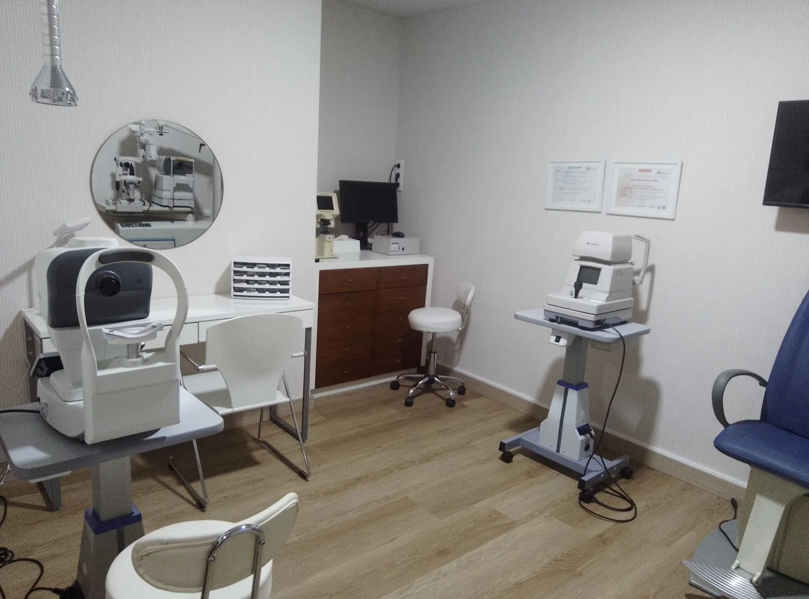

Qué es el ojo seco
Cada vez que parpadeas, el párpado extiende sobre el ojo una película de lágrima muy fina. Esa película tiene una capa de agua, que hidrata, y una capa de grasa por encima, fabricada por unas pequeñas glándulas del borde del párpado, que evita que el agua se evapore. Cuando falta lágrima o, mucho más a menudo, cuando la grasa es escasa y la lágrima se evapora demasiado rápido, la superficie del ojo se queda sin protección. Eso es el ojo seco.
No es una enfermedad grave en la mayoría de los casos, pero es crónica, molesta y empeora si no se trata. La buena noticia es que casi siempre se puede controlar con medidas sencillas.
Cómo se nota
- Sensación de arenilla o de tener algo en el ojo, sobre todo al despertar.
- Escozor, picor o pesadez que aumentan a lo largo del día.
- Ojos rojos sin otra causa, que empeoran con el viento o el aire acondicionado.
- Visión que va y viene: se vuelve borrosa y se aclara al parpadear varias veces.
- Lagrimeo. Parece contradictorio, pero es muy típico: el ojo irritado responde fabricando una lágrima de mala calidad que no hidrata y se desborda.
- Molestias con las lentillas, que antes aguantabas todo el día y ahora no.
- Cansancio al leer o mirar pantallas, con ganas de cerrar los ojos.
Por qué es tan frecuente aquí
Moraira tiene casi todo lo que al ojo seco le gusta: sol muchas horas al año, viento de mar, aire acondicionado en verano y calefacción en invierno. A eso se suma lo que afecta a cualquiera, viva donde viva:
- La edad. A partir de los 50 la producción de lágrima baja de forma natural. En las mujeres, la menopausia lo acelera.
- Las pantallas. Delante del móvil o del ordenador parpadeamos hasta tres veces menos, y la lágrima se evapora sin reponerse.
- Los párpados. Una blefaritis, que es la inflamación del borde del párpado, obstruye las glándulas que fabrican la grasa de la lágrima. Es la causa más común del ojo seco evaporativo.
- Las lentillas. No secan el ojo por sí mismas, pero alargar las horas de uso o llevar un material poco adecuado sí lo hace.
- Algunos medicamentos, como antihistamínicos, antidepresivos, diuréticos o tratamientos para el acné.
- Enfermedades generales como la diabetes, la rosácea, los problemas de tiroides o el síndrome de Sjögren.
- La cirugía láser de la miopía, que puede dar sequedad durante meses.
Qué puedes hacer en casa
- Lágrimas artificiales, con constancia. Lo que mejor funciona es usarlas de forma regular, tres o cuatro veces al día, no solo cuando el ojo ya molesta. Mejor sin conservantes si las vas a usar a diario o llevas lentillas. Hay muchos tipos; cuál te conviene depende de si te falta agua o grasa, y eso lo vemos en la revisión.
- Parpadea a propósito. Con pantallas, cada 20 minutos mira algo lejano durante 20 segundos y parpadea despacio varias veces. Coloca la pantalla algo por debajo de la altura de los ojos: así el párpado cubre más superficie.
- Protégete del aire. Evita el chorro directo del aire acondicionado, del ventilador o de la calefacción del coche. Con viento, unas gafas de sol envolventes marcan la diferencia.
- Cuida los párpados. Si tienes blefaritis, el tratamiento de base es sencillo: calor sobre los párpados cerrados durante cinco o diez minutos, con una mascarilla térmica o una compresa caliente, un masaje suave hacia el borde del párpado y limpieza del borde con una toallita o gel específico. Cada día, como lavarse los dientes.
- Hidrátate y cuida la dieta. Beber suficiente agua y tomar pescado azul o frutos secos, ricos en omega 3, ayuda a una parte de las personas.
- Con lentillas, no estires el uso. Respeta las horas y los días, pregúntanos por materiales más hidratados o por pasar a lentillas diarias, y usa solo gotas compatibles con lentillas.
Lo que no ayuda
- Las gotas "para quitar el rojo". Blanquean el ojo porque estrechan los vasos, pero no hidratan y, usadas a menudo, lo dejan más rojo e irritado.
- El agua. Lavarse los ojos con agua del grifo o con suero no sustituye a la lágrima y arrastra la poca grasa que queda.
- Frotarse. Alivia un segundo y empeora la inflamación.
Qué hacemos en la óptica
En la revisión exploramos la cantidad y la calidad de tu lágrima, el estado del borde de los párpados y cómo está la superficie del ojo. Con eso sabemos si te falta agua, grasa o las dos cosas, y te recomendamos la lágrima artificial adecuada y la rutina de párpados que necesitas. También comprobamos la graduación: una parte de las personas que vienen por "ver borroso" tienen en realidad ojo seco, y al revés. Si llevas lentillas, valoramos si te convienen otras.
Y cuando lo que vemos necesita tratamiento médico, te derivamos al oftalmólogo con un informe de lo que hemos encontrado.
Cuándo acudir al oftalmólogo
El ojo seco normal se controla con las medidas de arriba. Hay señales que piden una consulta médica sin esperar:
- Dolor intenso o molestia con la luz que no mejora al cerrar los ojos.
- Pérdida de visión que no se aclara al parpadear.
- Ojo muy rojo con secreción, o un ojo rojo que no mejora en pocos días.
- Molestias que siguen igual después de tres o cuatro semanas usando lágrimas artificiales con constancia.
El oftalmólogo dispone de tratamientos para los casos más rebeldes: colirios antiinflamatorios, tapones en los conductos lagrimales para que la lágrima dure más, o tratamientos de las glándulas del párpado con luz pulsada o calor.
En resumen
El ojo seco es frecuente, crónico y muy mejorable. Lágrimas artificiales de forma regular, parpadear más delante de las pantallas, protegerse del aire y cuidar los párpados cada día resuelven la mayoría de los casos. Si las molestias no ceden, ven a que lo miremos: a menudo la clave está en elegir bien la gota y en una rutina de párpados que nadie te había explicado.
¿Te escuecen o te lloran los ojos?
Pide cita para una revisión y lo miramos con calma. C/ Marjaleta, 3, Moraira.